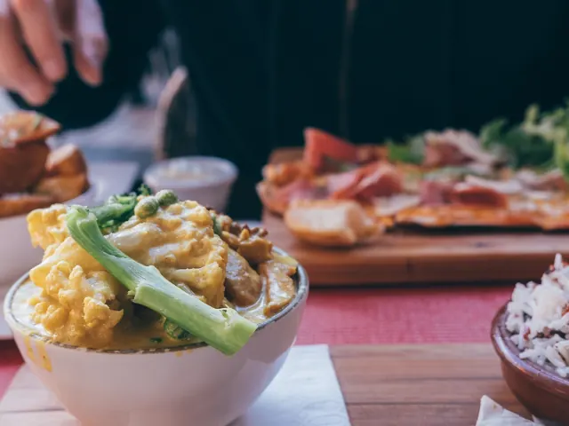

Betaalbaar uit eten in Nijmegen: zo doe je dat!
Gepubliceerd op 2 december 2024
Onderdeel van de gids Restaurants in Nijmegen en Studeren in Nijmegen

Wanneer je in de buurt van Nijmegen lekker uit eten wil gaan, dan is het natuurlijk van belang dat je daar geld voor hebt. Het kan namelijk zijn dat je niet te veel geld kwijt wil zijn aan een etentje. Daarom is het goed om te kijken hoe je betaalbaar uit eten kunt gaan in Nijmegen. Op die manier kun je zonder problemen lekker gaan genieten van een lekker etentje in Nijmegen, zonder dat je te veel geld moet betalen voor een lekker diner. Hieronder lees je precies hoe je betaalbaar uit eten kunt in Nijmegen en wat je daarvoor moet doen.
1. Keuze restaurant belangrijk
Om te beginnen is het natuurlijk van belang dat je een restaurant kiest dat past bij je budget. Van tevoren kun je meestal diverse menukaarten bekijken om erachter te komen welk restaurant het beste past bij je portemonnee. Een restaurant kiezen is een van de belangrijkste hoofdzaken om betaalbaar uit eten te kunnen gaan. Kijk naar een restaurant wat je lekker vindt, waar je zin in hebt om te eten en kijk wat te doen is qua vervoer. Zo kun je naar Bregje toe gaan om betaalbaar uit eten te kunnen. Het is lekker, makkelijk en natuurlijk betaalbaar voor jou. Bij Bregje kun je gemakkelijk online reserveren, zodat je een avond kunt genieten van heerlijk en betaalbaar eten. Mocht Bregje in Nijmegen niet goed uitkomen, dan kun je altijd nog op zoek gaan naar andere locaties voor een betaalbare avond uit eten.
2. Hou deals en kortingen in de gaten
Daarnaast is het ook verstandig om deals en kortingen van restaurants in de buurt in de gaten te houden. Zo kan het zijn dat een aantal plekken doordeweeks een andere menukaart hanteren dan in de weekenden. Daarom is het verstandig om een dag te kiezen waarop het voordelig is om uit eten te gaan. Verder kunnen restaurants in Nijmegen ook veel kortingen hanteren op het gebied van actiedagen. Kijk dus snel op de websites om te vergelijken waar je goedkoop uit eten kunt gaan. Zo kan een deal zijn dat je driegangen menu krijgt voor een bepaald bedrag. Kies dus een restaurant met een goede deal en de perfecte dag en geniet van een lekkere avond.

3. Een dinerbon
Een avondje uit eten gaan kan natuurlijk op verschillende manieren worden betaald. Zo kan het zijn dat je in de kast nog een dinerbon hebt liggen waar je nog niet aan hebt gedacht. Om goedkoop uit eten te kunnen in Nijmegen is het goed om hiervan gebruik te maken. Op die manier kun je wat meer bestellen, aangezien het voor een deel al betaald wordt door middel van de bon. Mocht je dus nog een dinerbon in de kast hebben liggen die je hebt gekregen van vrienden of familie, is het goed om te kijken waar je die in kunt leveren, voor een heerllijk betaalbaar diner in een restaurant naar keuze.
4. Bestudeer de kaart
Als je bij een restaurant zit en je wil graag betaalbaar uit eten gaan, dan is het natuurlijk van belang dat je de kaart goed bestudeert. Zo kan het zijn dat je bij een restaurant zit waar vlees veel duurder is dan bijvoorbeeld een vegetarisch gerecht. Kies natuurlijk een gerecht dat je lekker vindt, maar kijk hierbij ook naar de prijzen. Op die manier kun je namelijk voor jouw budget lekker uit eten gaan. Niet alleen het eten kent natuurlijk een prijskaartje. Ook voor drinken geldt hetzelfde. Zo kun je bijvoorbeeld ook kiezen voor een glas water in plaats van een drankje met alcohol. Bekijk dus goed de kaart in het restaurant en kies de gerechten die betaalbaar, maar wel superlekker zijn.
Meer restaurant inspiratie
Restaurants in Nijmegen
Zin om te beginnen? In onze bedrijvengids vind je alle 145 restaurants in Nijmegen, met openingstijden, kenmerken en een kaart.
Bekijk alle 145 restaurants in Nijmegen
Heb je zelf een restaurant? Laat je hier uitlichten.